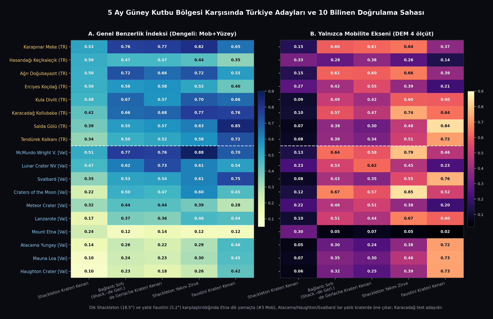
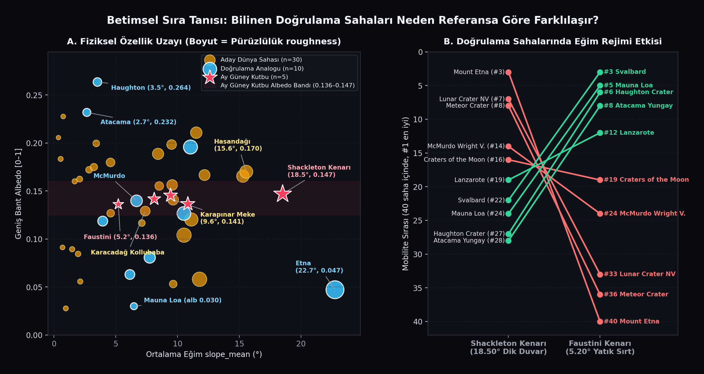

TUA ASTRO HACKATHON 2026 · NASA SPACE APPS · YÖNTEM VE STRATEJİ RAPORU
Ay'dan Dünya'ya benzerlik: veri nasıl toplandı, işlendi ve puanlandı
Dünya'daki hiçbir saha Ay'ı her açıdan kopyalayamaz. Bu yüzden 14'ü Türkiye'de yer alan 40 Dünya sahasını, Ay Güney Kutbu'ndaki 5 Artemis III referans bölgesine karşı ölçüt ölçüt karşılaştırdık, her puana hata payını ekledik ve sonuçları Milli Uzay Programı saha doğrulama ihtiyaçlarıyla ilişkilendirdik.
1 · Veri nereden geldi
Tüm veriler, NASA'nın ve ortak uzay ajansı ESA'nın herkese açık uydu ürünlerinden alındı. Eğim, pürüzlülük ve yükselti farkını Ay'da ve Dünya'da aynı yöntemle hesapladık. Albedo'da küçük bir dönüşüm gerekti; sıcaklığı ise bu sürümde puana katmadık (nedenleri aşağıda).
| Ölçüt (uygulamadaki ad) | Ay verisi | Dünya verisi | Çözünürlük Ay · Dünya |
|---|---|---|---|
| Ortalama eğim Dik eğim (p90) Yüzey pürüzlülüğü Yükselti farkı |
LRO LOLA yükseklik haritası, hata haritalarıyla birlikteNASA · GSFC PGDA, Ürün 78 | Copernicus GLO-30 yükseklik modeli; yüksek dağlarda eksik kalan yerler için NASADEMESA · NASA | 5 m · 30 m |
| Geniş bant albedo (yüzey parlaklığı) |
LRO LOLA yansıtıcılık haritası (1064 nm), ×0.38 ile geniş banda çevrildiNASA · PDS | MODIS albedo ürünü (MCD43A3)NASA · MODIS | 1000 m · 500 m |
| Sıcaklık farkı Isıl eylemsizlik (bu sürümde puana katılmadı) |
LRO Diviner kutup sıcaklık haritalarıNASA · PDS | MODIS yüzey sıcaklığı (MOD11A2)NASA · MODIS | 240 m · 1000 m |
| Görsel bağlam (puana girmez) |
LOLA kabartma ve eğim sınıfı görüntüleriNASA · LRO | Sentinel-2 L2A uydu görüntüleri ve WorldCover arazi örtüsüESA · Copernicus | 5 m · 10 m |
Bu ölçütler ne anlama geliyor?
| Ölçüt | Ne ölçüyor? |
|---|---|
| Ortalama eğim (°) | Sahanın ortalama ne kadar eğimli olduğu. Araç sürüşünü doğrudan etkiler. |
| Dik eğim (p90) (°) | Sahanın en dik kesimlerinin eğimi: alanın %90'ı bu değerden daha yatıktır. |
| Yüzey pürüzlülüğü (m) | Zeminin genel eğimi çıkarıldıktan sonra yüksekliğin ne kadar dalgalandığı. Taşlı ve çukurlu zeminde yüksektir. |
| Yükselti farkı (m) | Saha içindeki en yüksek ve en alçak nokta arasındaki fark. |
| Geniş bant albedo (0–1) | Yüzeyin üstüne düşen güneş ışığının ne kadarını geri yansıttığı. 0 tamamen koyu, 1 tamamen parlak demektir. |
Albedo: Ay ve Dünya verisi nasıl eşlendi?
Ay verisi tek bir dalga boyunda (1064 nm lazer) ölçülmüş yansıtıcılıktır. Dünya'da kullandığımız MODIS ise güneş ışığının tamamını kapsayan geniş bant albedosunu verir. İkisini karşılaştırabilmek için Ay değerini 0.38 ile çarparak geniş banda çevirdik. Bu kesin bir ölçüm değil, bir yaklaşımdır. Bu yüzden katsayıyı makul bir aralıkta (0.34–0.42) değiştirip sıralamanın bozulup bozulmadığına baktık; sahaların sırası büyük ölçüde korundu (sıra korelasyonu 0.87–0.94).
Sıcaklık neden puana katılmadı?
Ay'da bir gün, Dünya'nın yaklaşık 29.5 günü kadar sürer; güney kutbunda güneş ufka çok yakın döner ve bazı kraterlerin dibi hiç ışık görmez. MODIS ise Dünya'da 24 saatlik gündüz–gece sıcaklık farkını ölçer. İki sayı aynı şeyi ölçmediği için yan yana koymak mühendisleri yanıltırdı. Bu yüzden sıcaklık sütunlarını boş bıraktık, değer uydurmadık. Sıcaklığın etkisini uygulamadaki 8 boyutlu karnede (Bölüm 5) sayısal olmayan biçimde anlattık. Sonraki sürümde Diviner'ın gün boyu ölçümleriyle eşdeğer bir tanım kurmayı planlıyoruz.
2 · Veri nasıl işlendi
Ham uydu verisinden karşılaştırılabilir tabloya beş adımda geldik.
- İndirme ve kayıt
Her ürünün adı ve sürümü indirildiği anda kaydedilir ve tablodaki her sayının yanında saklanır. Böylece her değerin hangi uydu ürününden geldiği izlenebilir.
- Her sahayı aynı boyutta kesme
Her saha için merkez noktasından 1 km yarıçaplı (2 km çaplı) bir daire alındı. Ay verisi 5 m, Dünya verisi 30 m çözünürlükte olduğu için iki tarafı aynı daire içinde karşılaştırdık ve her sayının yanında verinin gerçek çözünürlüğünü belirttik (_res_m). Su veya bitki karışmış piksellere sahip Dünya sahalarını ayrıca işaretledik.
- Metre cinsinden hesaplama
Eğim ve mesafeler, harita düzleştirilip metreye çevrildikten sonra hesaplandı (Ay için kutup, Dünya için yerel harita projeksiyonu). Derece cinsinden haritada eğim hesaplamak yanlış sonuç verir; bunu baştan engelledik.
- Hata payı ekleme
Her ölçüme, ürünün kendi belirsizliği eklendi (_sd). Bu belirsizlik sonradan puanlara taşınır.
- Otomatik kontrol
Her tablo, birim ve değer aralıklarını denetleyen bir kontrol betiğinden geçer; gerçek olmayan (sentetik veya yer tutucu) değer bulursa hata verir. Eksik veri 0 olarak değil, boş (NaN) bırakılır.
3 · Puanlar nasıl hesaplandı
Üç basit adım: benzerlik puanı, hata aralığı ve görev ağırlığı. Sonunda bilinen analoglarla yaptığımız kontrolü anlatıyoruz.
Benzerlik puanı
Her Dünya sahasını, seçilen Ay bölgesiyle ölçüt ölçüt karşılaştırıyoruz. Ölçütler iki eksende toplanır: Mobilite (ortalama eğim, dik eğim, pürüzlülük, yükselti farkı) ve Yüzey (albedo). Birimler farklı olduğu için (derece, metre) her farkı, 40 Dünya sahası ve seçili Ay bölgesinden oluşan havuzun yayılımına böleriz. Ortalama fark bize bir "uzaklık" (D) verir ve puan bundan hesaplanır:
| Uzaklık (D) | Puan | Anlamı |
|---|---|---|
| 0 | 1.00 | Ölçütlerin hepsinde aynı |
| 1 | 0.37 | Ortalama bir yayılım kadar farklı |
| 2 | 0.14 | Belirgin biçimde farklı |
Hata aralığı
Her ölçümün küçük bir belirsizliği vardır. Bunun puanı ne kadar oynattığını görmek için hesabı 200 kez tekrarlıyoruz: her turda ölçümleri hata payı kadar rastgele kaydırıyoruz. Çıkan puanların %5 ile %95 arasındaki bandı, raporda köşeli parantezle gösterilen hata aralığıdır. Dar aralık, sonucun ölçüm hatasına dayanıklı olduğunu; geniş aralık, puana temkinli yaklaşılması gerektiğini gösterir. Belirsizliği bilinmeyen bir değer asla 0 sayılmaz; o durumda aralık boş bırakılır. Rastgelelik sabit tohumla üretildiği için aynı komut her zaman aynı sonucu verir.
Görev profilleri
Mobilite ve Yüzey puanları, yapılacak teste göre ağırlıklandırılarak tek genel puana birleşir. Bir eksen hesaplanamıyorsa (Termal gibi) o eksen dışarıda bırakılır ve kalan ağırlıklar yeniden ölçeklenir; yani eksik veri puana gizlice karışmaz. Kullanıcı kendi ağırlığını kaydırıcıyla da girebilir.
| Profil | Mobilite : Yüzey | Ne için? |
|---|---|---|
| Dengeli rover testi | 1 : 1 | Sürüş yeteneği ve yüzey parlaklığı eşit önemde |
| Tırmanma ve tekerlek testi | 2 : 1 | Eğim ve pürüzlülük, tekerlek tutuşu için öne çıkar |
| Optik kamera ve güneş paneli testi | 1 : 2 | Albedo, kamera kontrastını ve panellere yansıyan ışığı belirler |
Bilinen analoglarla kontrol (betimsel sıra tanısı)
Literatürde bilinen 10 analog sahayı (Etna, Atacama, Haughton vb.) puanlamada özel işlem görmeden diğer sahalarla birlikte sıraladık ve sonucu, sıralamaya bakmadan önce kaynaklara dayanarak yazdığımız beklentilerle karşılaştırdık. Bu sahalar da standartlaştırma havuzunun içinde olduğu için bunu bağımsız bir sınav olarak sunmuyoruz; sonuçları yorumlamamıza yardımcı olan bir tanı olarak kullanıyoruz. Örneğin dik Shackleton kenarında Atacama mobilitede #28, Haughton #27'dedir. Daha yatık Faustini kenarı seçilince Haughton #6'ya, Atacama #8'e yükselir. Bu, yöntemin referansın arazi yapısına duyarlı olduğunu gösterir.
4 · Neden bu sonuçlar çıktı?
Puanların nereden geldiğini iki örnekle açıklıyoruz: dik bir referans (Shackleton kenarı) ve yatık bir referans (Faustini kenarı). Aynı yöntem, referansın arazisine göre farklı sahaları öne çıkarıyor.
Shackleton kenarı: dik bir referans
| Saha | Ort. eğim | Dik eğim (p90) | Yükselti farkı | Albedo | Mobilite sırası | Yüzey sırası | Genel puan (sıra) |
|---|---|---|---|---|---|---|---|
| Shackleton kenarı (Ay) | 18.50° | 30.79° | 501 m | 0.147 | referans | referans | referans |
| Karapınar Meke | 9.64° | 23.36° | 223 m | 0.141 | #11 | #1 | 0.528 (#1) |
| Hasandağı Keçekalecik | 15.56° | 30.42° | 449 m | 0.170 | #1 | #12 | 0.502 (#3) |
Karapınar Meke genel puanda birinci, çünkü albedosu Shackleton'la neredeyse aynı (0.141 ve 0.147). Arazisi ise yaklaşık yarı yarıya daha yatık (ortalama eğim 9.6°, Shackleton'da 18.5°). Genel puan iki eksenin ortalamasıdır: Mobilite 0.153, Yüzey 0.903, ortalama (0.153 + 0.903) / 2 = 0.528. Yani Meke "Shackleton'a en çok benzeyen yer" değil, "yüzey parlaklığı en yakın yer"dir.
Hasandağı Keçekalecik ise arazide en yakın sahadır (ortalama eğim 15.6°, yükselti farkı 449 m; Mobilite #1), ama albedosu daha parlak olduğu için (0.170) Yüzey'de #12'de kalır. Tekerlek ve tırmanma testi için Hasandağı, kamera ve güneş paneli testi için Meke daha uygundur. Profilleri ayırmamızın nedeni budur.
Faustini kenarı: yatık bir referans
| Saha | Ort. eğim | Dik eğim (p90) | Yükselti farkı | Albedo | Mobilite sırası | Yüzey sırası | Genel puan (sıra) |
|---|---|---|---|---|---|---|---|
| Faustini kenarı (Ay) | 5.20° | 8.68° | 145 m | 0.136 | referans | referans | referans |
| Salda Gölü terası | 4.58° | 11.46° | 121 m | 0.127 | #1 | #4 | 0.847 (#1) |
| Karacadağ zirve platosu | 7.38° | 14.18° | 168 m | 0.129 | #11 | #3 | 0.761 (#2) |
Faustini kenarı çok daha yatık (5.2°). Bu yüzden dik volkan yamaçları geride kalır; Salda Gölü terası (4.6°) ve Karacadağ zirve platosu (7.4°) öne çıkar. Aynı referansta bilinen analoglardan Haughton mobilitede #6'ya, Atacama #8'e yükselir; Shackleton'da #27 ve #28'dedirler. Bu bir tutarsızlık değil: yöntem, referansın arazi yapısına göre farklı sahaları seçer.
Bu sonuçlardan ne çıkarabiliriz, ne çıkaramayız?
Çıkarabiliriz: ölçtüğümüz özelliklerde (eğim, pürüzlülük, yükselti farkı, albedo) hangi sahaların hangi Ay bölgesine daha yakın olduğunu ve bu yakınlığın hangi eksenden geldiğini.
Çıkaramayız: aynı jeolojik süreci. Karapınar Meke bir volkanik patlama (maar) krateri, Shackleton bir çarpma krateri. Salda ise karbonatlı bir göl ve pikselleri su ve bitki karışımı olarak işaretli. Sayısal yakınlık "bu saha Ay'ın aynısıdır" demek değildir; hangi testin hangi sahada denenebileceği için bir ön elemedir.
Havuz çekincesi: 40 saha elle seçildi ve puanlar bu havuza göre standartlaştırıldı. Farklı bir saha havuzuyla sıralar değişebilir.
5 · Sonuçları yorumlarken bilinmesi gerekenler
Önce 8 boyutlu karneyi, sonra dört sınırı ve her biri için aldığımız önlemi anlatıyoruz.
8 boyutlu karne
Bir Dünya sahası Ay'a pek çok açıdan benzeyebilir (arazi, sıcaklık, buz, toz, yeraltı gibi). Biz bunları 8 boyutta topladık ve hangisini puanladığımızı, hangisini yalnızca yazılı anlattığımızı açıkça gösteriyoruz. Terimler: boyut bu 8 açıdır; eksen puanlanan gruplardır (Mobilite, Yüzey, Termal); ölçüt tek tek ölçümlerdir (ortalama eğim, albedo gibi).
| # | Boyut | Bu sürümde |
|---|---|---|
| 1 | Arazi şekli (eğim, pürüzlülük) | Sayısal puan var (Mobilite) |
| 2 | Yüzey parlaklığı | Sayısal puan var (Yüzey) |
| 3 | Sıcaklık ve ısıl eylemsizlik | Hesaplanmadı: Ay ve Dünya verisi uyumsuz |
| 4 | Kayaç türü (bazalt, evaporit vb.) | Yalnızca etiket, puana girmez |
| 5 | Su buzu ve donmuş zemin | Yalnızca not, puana girmez |
| 6 | Lav tüpleri ve yeraltı boşlukları | Yalnızca not; radar verisiyle sonraki sürümde |
| 7 | Toz, rüzgâr ve elektrostatik toz | Laboratuvarda sınanabilir |
| 8 | Yerçekimi, vakum, radyasyon, 29.5 günlük döngü | Dünya'da üretilemez; laboratuvar veya simülasyon |
Dört sınır
En yüksek puan bile düşük
Shackleton için en yüksek genel puan 0.53'tür; Mobilite'de en iyi saha bile yalnızca 0.335 alır. Yani hiçbir Dünya sahası Ay'ı tüm ölçütlerde taklit etmiyor. Genel puan iki eksenin ortalamasıdır: iki derste 90 ve 15 alan öğrencinin ortalaması 52'dir ve bu ortalama gerçeği anlatmaz. Karapınar Meke de böyledir: Yüzey 0.903, Mobilite 0.153, ortalama 0.528. Bu yüzden tek bir "en iyi analog" yerine eksen eksen sonuç gösteriyoruz.
Yüzey ekseni tek ölçüte dayanıyor
Mobilite dört ölçütten oluşur; biri yanılsa diğerleri dengeler. Yüzey ekseninde ise yalnızca albedo var ve Ay albedosu bir dönüşümle (×0.38) elde edildi. Katsayı 0.34–0.42 arasında değiştiğinde Shackleton'ın albedosu yaklaşık 0.13–0.16 arasında oynar. Bu aralığa giren pek çok Dünya sahası olduğu için (ör. Karapınar Meke 0.141, Kula Divlit 0.155) Yüzey'de en üstteki sahalar küçük albedo farklarıyla ayrılır. Sıralamanın büyük ölçüde korunduğunu test ettik (sıra korelasyonu 0.87–0.94), ama birebir aynı kalmıyor. Bu yüzden Yüzey puanlarını Mobilite kadar kesin saymıyoruz: belirgin koyu sahaların (ör. Etna, albedo 0.047) elenmesi sağlam, en üstteki birkaç sahanın kendi aralarındaki sırası değil.
Çözünürlük farkı
Ay verisi 5 m, Dünya verisi 30 m çözünürlükte. Kaba veri ince detayı çözüyormuş gibi sunulamaz; bu yüzden iki tarafı aynı 1 km'lik dairede topladık, her sayının yanında gerçek çözünürlüğünü gösterdik ve su veya bitki karışmış pikselleri işaretledik.
Dünya'nın aşamayacağı sınırlar
Ay'ın altıda bir yerçekimini, vakumunu, radyasyonunu ve 29.5 günlük gün döngüsünü hiçbir Dünya sahası doğal olarak üretemez. Bu koşullar yalnızca laboratuvarda veya simülasyonda sınanabilir; sonuçlarımız yalnızca arazi ve yüzey benzerliği için bir ön elemedir.
6 · Yöntemin çıktısı
Aynı işlem hattının ürettiği beş temel figür. Tümü data/processed/features_*.parquet dosyalarındaki gerçek uydu verisiyle çizildi.





Tek paragrafta özet
Ay Güney Kutbu'ndaki 5 referans bölgeye, 40 Dünya sahasının eğim, pürüzlülük, yükselti farkı ve albedo bakımından ne kadar benzediğini iki eksende (Mobilite, Yüzey) puanlayan; her puana hata aralığı ekleyen ve sıralamayı yapılacak teste göre değiştirebilen bir karar destek sistemi. Sıcaklık ekseni, Ay ve Dünya verileri uyumsuz olduğu için bu sürümde puana katılmadı; Mars ve radar tabanlı yeraltı analizi sonraki sürümün kapsamındadır.
7 · Stratejik etki: Milli Uzay Programı ve Türkiye'nin 14 aday sahası
TUA Astro Hackathon değerlendirme çerçevesindeki Etki ekseni doğrultusunda sistem, yalnızca küresel analogları sıralayan akademik bir çalışma olarak değil; Türkiye'nin Milli Uzay Programı ve Ay Araştırma Programı hedefleri kapsamında yerli gezgin (rover), tekerlek, kamera ve sensör alt sistemlerinin uçuş öncesi saha doğrulama altyapısını planlayan bir ön tarama aracı olarak kurgulandı.
Neden büyük bir mühendislik ve maliyet sorununu çözüyor?
Uzay donanımlarının Ay ortamına gönderilmeden önce Dünya'da test edilmesi zorunludur; ancak uluslararası literatürde yerleşik saha testleri çoğunlukla Atacama, Etna, Mauna Loa, Haughton veya Lanzarote gibi yurt dışı lokasyonlarda yürütülmektedir. Üstelik "genel analog" etiketiyle seçilen bir saha, test edilmek istenen gerçek alt sistemi zorlamayabilir: örneğin düz bir çöl tabanında tekerlek tırmanma sınırları sınanamazken, çok koyu bir volkanik akıntıda optik navigasyon kamerasının pozlama dengesi Ay kutup regolitine benzemez.
Bu proje iki somut boşluğu doldurur: (1) yurt dışı kampanya maliyetine girmeden önce Türkiye içindeki jeolojik ve topografik sahaları uluslararası adaylarla aynı metrik ve uydu terazisinde kıyaslar, (2) "tek mükemmel yer" aramak yerine hangi alt sistemin Türkiye'deki hangi sahada, hangisinin ise laboratuvarda doğrulanması gerektiğini ayırır. Böylece Türkiye'deki üniversite takımları, araştırma enstitüleri ve uzay sanayii ekipleri için kanıta dayalı bir ulusal test yatağı envanteri oluşur.
Türkiye'deki 14 aday sahanın nicel profili
Havuzdaki 30 aday sahanın 14'ü Anadolu'nun farklı volkanik, ignimbritik ve evaporitik bölgelerinden seçildi. Aşağıdaki tablo, bu 14 sahanın Shackleton Krateri Kenarı (dik referans: 18.50° ortalama eğim, 0.147 albedo) ve Faustini Kenarı (yatık referans: 5.20° ortalama eğim, 0.136 albedo) karşısındaki doğrulanmış skorlarını ve uygun test rollerini özetler.
| Türkiye aday sahası | Litoloji sınıfı | Ort. eğim | Albedo | Shackleton Mob · Yüz | Shackleton Genel (Sıra) | Faustini Genel (Sıra) | Öne çıkan test rolü |
|---|---|---|---|---|---|---|---|
| Karapınar Meke Maarı (Konya) | Bazalt | 9.64° | 0.141 | #11 · #1 | 0.528 (#1) | 0.646 (#7) | Optik/güneş paneli #1 (0.653) |
| Hasandağı Keçekalecik (Aksaray) | Bazalt | 15.56° | 0.170 | #1 · #12 | 0.502 (#3) | 0.348 (#33) | Tırmanma ve tekerlek #1 (0.446) |
| Ağrı Dağı Doğubayazıt (Ağrı) | Bazalt | 9.56° | 0.156 | #12 · #4 | 0.499 (#4) | 0.547 (#13) | Optik/güneş paneli #3 (0.616) |
| Erciyes Koçdağ (Kayseri) | Bazalt | 15.29° | 0.166 | #6 · #8 | 0.495 (#5) | 0.405 (#29) | Tırmanma ve tekerlek #2 (0.419) |
| Kula Divlit (Manisa) | Bazalt | 8.52° | 0.155 | #20 · #3 | 0.480 (#6) | 0.658 (#6) | Optik/güneş paneli #4 (0.609) |
| Nemrut Kalderası (Bitlis) | Volkanik tüf | 12.18° | 0.167 | #9 · #9 | 0.453 (#8) | 0.435 (#26) | Dengeli orta-dik arazi |
| Karacadağ Zirve (Kollubaba Platosu) | Bazalt | 7.38° | 0.129 | #18 · #7 | 0.419 (#10) | 0.761 (#2) | Yatık iniş / Faustini #2 |
| Salda Gölü Terası (Burdur) | Evaporit MIXED_CROP+VEG | 4.58° | 0.127 | #25 · #10 | 0.388 (#13) | 0.847 (#1) | Faustini #1 (karışık piksel notlu) |
| Karacadağ Ovabağ (Diyarbakır) | Bazalt | 2.83° | 0.172 | #30 · #13 | 0.349 (#15) | 0.609 (#11) | Düşük eğimli bazalt düzlük |
| Tendürek Kalkanı (Ağrı-Van) | Bazalt | 7.11° | 0.117 | #21 · #17 | 0.337 (#17) | 0.719 (#4) | Yatık bazalt kalkan platosu |
| Acıgöl Güneydağ (Nevşehir) | Volkanik tüf | 3.22° | 0.175 | #26 · #15 | 0.337 (#18) | 0.643 (#8) | Hafif eğimli tefra halkası |
| Süphan Güney Eteği (Bitlis) | Bazalt MIXED_CROP+VEG | 9.52° | 0.198 | #13 · #23 | 0.273 (#23) | 0.398 (#30) | Karışık piksel sınırlı aday |
| Kapadokya Kavakköy (Nevşehir) | Volkanik tüf | 11.51° | 0.211 | #10 · #29 | 0.261 (#25) | 0.290 (#37) | de Gerlache Mobilite #1 (0.681) |
| Tuz Gölü Güney (Aksaray) | Evaporit MIXED_WATER | 0.35° | 0.206 | #40 · #27 | 0.198 (#31) | 0.367 (#32) | Düz tuz tabanı (su karışımı notlu) |
Literatür dürüstlüğü: "keşif" iddiası değil, nicel aday önerisi
Yerbilimleri literatürü taranarak sahte bir "ilk kez keşfedildi" iddiasından özellikle kaçınıldı. Salda Gölü (NASA Perseverance / Jezero karbonat analogu), Tuz Gölü ve Acıgöl-Karapınar havzaları gezegen biliminde zaten bilinen sahalardır. Buna karşın Karacadağ, Hasandağı, Erciyes, Kula, Tendürek, Nemrut, Süphan, Ağrı Doğubayazıt ve Kapadokya bölümü uluslararası volkanoloji literatüründen seçilip ilk kez çok eksenli yörünge benzerliği ve belirsizlik ölçümüyle karşılaştırmalı test adayı (candidate) olarak öne çıkarıldı.
8 · Yaratıcılık, bilimsel geçerlilik ve görev uyumluluğu
Bu bölüm projeyi TUA Astro Hackathon değerlendirme başlıkları altında ele alır: yeniliğin nereden geldiğini, neden kara kutu yapay zekâ yerine şeffaf fizik/istatistik seçildiğini, teknik doğrulama kanıtlarını ve v1 kapsam sınırlarını açıklar.
1 · Yaratıcılık ve inovasyon: tek skoru parçalayan epistemolojik yaklaşım
Bu projenin özgünlüğü, alışılagelmiş "en iyi 10 benzer yer" yaklaşımını yapısal olarak değiştirmesinden gelir. Yüzey parlaklığı yakın olan bir sahayla tekerlek eğimi yakın olan sahayı tek ortalamada eritmek yerine karar mimarisi dört katmana ayrılır: (1) eksen ayrıştırma, (2) 200 çekilişli Monte Carlo hata yayılımı, (3) analojinin kırıldığı fiziksel sınırlar kartı ve (4) açgözlü küme kapsamıyla minimum saha portföyü (select_portfolio).
Neden kara kutu yapay zekâ veya tek bir rover simülasyonu kullanılmadı?
Bilerek seçilmiş açıklanabilirlik: 40 saha gibi küçük ve farklı uydulardan derlenmiş bir örneklemde derin öğrenme veya kara kutu sınıflandırıcı kurmak aşırı öğrenmeye (overfitting) açıktır ve bir görev mühendisine sonucun neden çıktığını söyleyemez. Doğrusal Z-ölçeklemesi ve e−D dönüşümü sayesinde her sıranın arkasındaki fiziksel fark denetlenebilir; ayrıca Ay–Dünya termal tanımı uyuşmadığında (Karar #30) model zorla puan uydurmak yerine ekseni kapatabilir.
Fizik simülasyonuna alternatif değil, ön katman: Bu yazılım 1/6 g vakum odasının veya tekerlek–regolit dinamiği simülatörünün yerini alma iddiasında değildir; pahalı saha kampanyaları ve ayrıntılı simülasyonlardan hemen önce doğru sahayı daraltan karar destek katmanıdır.
2 · Bilimsel ve teknik geçerlilik: gerçek uzay verisi, metrik geometri ve testler
Teknik uygulanabilirlik dört bağımsız denetim katmanıyla doğrulandı:
| Doğrulama katmanı | Ne kanıtlandı? | Ölçülen çıktı |
|---|---|---|
| Gerçek yörünge veri sözleşmesiscripts/validate_all.py --fail-on-mock | Her sayısal hücrede ürün/sürüm kaynağı (_src), çözünürlük (_res_m) ve 1-sigma belirsizlik (_sd); eksik veri için 0 değil NaN. | 40 Dünya + 5 Ay satırında 0 sentetik veri, 0 hata, 0 uyarı. |
| Metrik projeksiyon ve ortak penceredocs/data_notes.md §1 | Derece tabanlı yanlış eğim hesabı yasak; Ay için Kutupsal Stereografik (5 m), Dünya için yerel UTM/kutup (30 m) ağda r = 1 km içi düzlemsel arındırma. | Eğimin piksel aralığına bağlılığı açıkça belgeli; yüksek dağ boşluklarında NASADEM yedeği. |
| Bağımsız matematik ve birim testleripytest -q · src/scoring/ | 5 referans × 40 saha × 3 eksen = 600 eksen skoru ve 200 toplam skor, koddan bağımsız elle/formülle çapraz kontrol edildi. | Çapraz kontrol sapma = 0; 51/51 test geçti (hata payı sıfır varsayılmaz, sabit seed=0 tekrarlanabilir). |
| Fiziksel tanım dürüstlüğü (Karar #30) ve duyarlılıkLRO Diviner .lbl · LOLA 1064 nm · MCD43A3 | Diviner kutup yerel saat dilimi (ltim) ile MODIS yıllık ortalama ΔT tanımı uyuşmadığı için termal eksen askıda; LOLA ×0.38 albedo katsayısı 0.34–0.42 arasında sınandı. | Sıra korelasyonu 0.87–0.94; ancak ×0.38 literatür künyesi şeffafça TODO(verify) işaretli. |
3 · Görev uyumluluğu ve v1 ↔ v2 sınırı
"Permanent Moon Base Locations and Mars" görevi hem Ay hem Mars hem de üs/keşif kriterlerini kapsar. İlk sürümde kaliteyi korumak ve uydurma veri basmamak için kapsam bilinçli olarak dar ve derin tutuldu:
- v1'de tamamlananlar: NASA Artemis III adaylarından 5 Ay Güney Kutbu bölgesi, 2 aktif sayısal eksen (Mobilite ve Yüzey), 3 donanım odaklı görev profili, 10 bilinen analog ile ön-kayıtlı betimsel sıra tanısı, 8 boyutlu nitel+nicel karne ve hem Streamlit hem tarayıcı tabanlı (Leaflet harita + 3B arazi + canlı 200 çekilişli ağırlık kaydırıcı) çalışır prototip.
- Bilinçli olarak v2 yol haritasına bırakılanlar: Mars yüzey verisi (
MOLA / THEMIS; veri sözleşmesi gök cismi bağımsız olarak hazır), Divinerltim01..96ile eşlenmiş tam günlük termal döngü ve ortak ölçekli ısıl eylemsizlik, otomatik küresel ızgara taraması ve radar tabanlı lav tüpü / yeraltı katmanı.
4 · Jüri değerlendirme kriterleriyle özet eşleşme
| Değerlendirme kriteri | Ağırlık | Bu projedeki karşılığı |
|---|---|---|
| Etki (Milli Uzay Programı uyumu) | %25 | Türkiye'deki 14 sahayı (Karapınar Meke #1, Hasandağı Mobilite #1) uluslararası analoglarla kıyaslayarak yerli rover ve optik test yatağı seçimine altlık üretir. |
| Yaratıcılık ve İnovasyon | %20 | Tek puanı parçalayan eksen ayrımı + 200 çekilişli belirsizlik + fiziksel kırılma sınırı + portföy kapsamı; küçük veride kara kutu AI yerine tam açıklanabilirlik. |
| Bilimsel ve Teknik Geçerlilik | %25 | NASA/ESA kaynaklı gerçek veri (0 mock), metrik projeksiyon, PDS .lbl tanım denetimi (Karar #30), duyarlılık testi ve 51/51 test doğrulaması. |
| Görev Uyumluluğu (Relevance) | %15 | Ay Güney Kutbu üs çevresi rover/optik test ihtiyacına tam odak; Mars, tam günlük termal ve küresel grid taraması mimarisi hazır biçimde v2 olarak ayrıştırılmış. |
| Sunum ve Kullanılabilirlik | %15 | Çevrimdışı DEM/uydu karolarıyla çalışan interaktif harita + 3B arazi arayüzü, canlı görev ağırlıklandırması ve kaynak izli sade teknik rapor. |